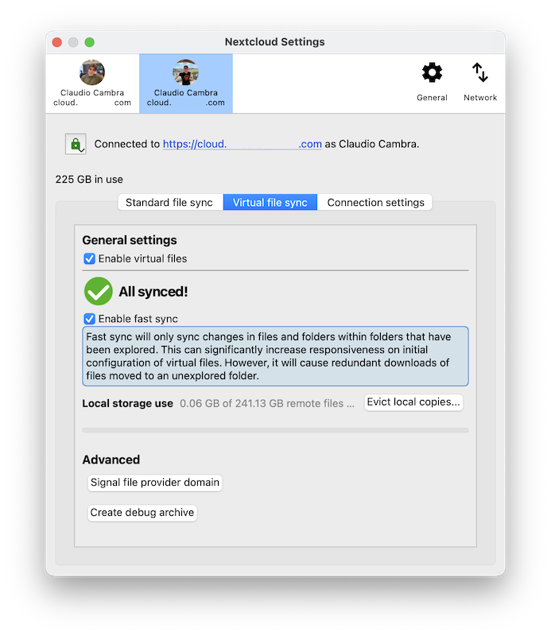

Klient virtuálních souborů pro macOS
Na virtuálních souborech založená synchronizace pro uživatele Nextcloud pro počítač je nyní k dispozici na macOS.
Narozdíl od Windows, podpora pro virtuální soubory na macOS je poskytována zvlášť verzí klienta. To umožňuje pro uživatele, kteří chtějí zůstat u používání tohoto způsobu synchronizace, udržovat nejlepší možný dojem z používání pro klasicky synchronizované soubory, včetně včlenění stavu synchronizace a akce v kontextové nabídce. Stejně jako klasický klient synchronizace, klient virtuálních souborů v macOS je vydáván společně s klientem pro počítač pro Windows a Linux a těží z pravidelných aktualizací opravujících chyby a přidávajících funkce, které zlepšují dojem z používání.
Podporované funkce
Udržování lokálně a vystěhovávání po jednotlivých souborech
Inteligentní vystěhování místní kopie
Napojení na Spotlight
Náhledy virtuálních souborů v rámci Finder
Podpora pro formáty specifické pro Apple, jako například balíčky aplikací a ty z iWork (Pages, Numbers, Keynote)
Kompatibilita vzdáleného uzamykání souborů
Podpora pro „Upravit lokálně“
Sdílení souborů s ostatními uživateli
Automatická synchronizace vzdálených změn
Další!
Poznámka
Pro zlepšení zjišťování vzdálených změn doporučujeme zapnout na vámi využívaném Nextloud serveru aplikaci notify_push. Tato aplikace upozorní klienta pro počítač na změny na serveru, jakmile nastanou, což zkrátí dobu, kterou klientovi zabere zjištění změn. Toto také eliminuje potřebu toho, aby se klient pro počítač neustále serveru dotazoval na změny.
Instalace a úvodní nastavení
Klient virtuálních souborů je šířen jako instalační balíček, který připomíná klasického synchronizačního klienta macOS. Klienta pro počítač je možné nainstalovat provedením kroků, uvedených v instalátoru.
Klient virtuálních souborů pro počítač je zaměnitelný s klientem klasické synchronizace. To znamená, že vaše existující účty a nastavení budou přenesena do tohoto klienta a naopak, pokud byste se rozhodli vrátit ke klientovi klasické synchronizace. To zahrnuje jakékoli dříve existující standardní synchronizační složky, stejně jako klient virtuálních souborů také podporuje klasickou synchronizaci.
Poznámka
Kvůli technickým omezením v macOS není možné poskytnout začlenění ve Finderu jak pro klasické synchronizační složky, tak složky synchronizace virtuálních souborů. Klasické synchronizační složky v klientovi virtuálních souborů proto nebudou mít začlenění do Finderu, jako například ikony stavu synchronizace nebo akce v kontextové nabídce.
Jakýkoli existující nebo nově nastavené účty budou mít virtuální soubory automaticky zapnuté. Na macOS se virtuální soubory každého z účtů nacházejí ve své vlastní doméně, odděleně od jakýchkoli předtím existujících složek klasické synchronizace. Tyto domény je možné najít vypsané pod skupinou „Umístění“ v postranním panelu Finder.

Při prvním přístupu k jedné z těchto domén klient pro počítač vyžádá informace o vzdálených souborech ze serveru. Tato první synchronizace může nějakou dobu trvat – podle množství souborů, hostovaných na serveru.
Napojení na Finder
Klient virtuálních souborů má odlišná napojení na Finder, která umožňují hlubší a nativnější integraci do prohlížeče souborů v macOS, než klasický synchronizační klient.
Indikátory stavu synchronizace
Obdobně jako klasický synchronizační klient, ten pro virtuální soubory zobrazuje ikony vedle nich, které značí jaký je jejich stav.
Mrak se šipkou: položka nebo jí podřízená je virtuální a je k dispozici pro uchovávání lokálně
Obrys mraku: položka je částečně dostupná lokálně
Žádná ikona: položka je k dispozici i bez připojení
Akce kontextové nabídky
Kliknutím s přidrženou klávesou Ctrl, klepnutím dvěma prsty, nebo pravým tlačítkem myši na položku ve Finder poskytne kontextovou nabídku, ve které je možné nalézt několik položek, poskytovaných klientem virtuálních souborů, které umožňují použít některé z funkcí podporovaných Nextcloudem. Mezi ně patří:
Uzamykání souborů (pokud podporováno serverem)

Sdílení souborů (pokud podporováno serverem)

Nastavení
Nastavení, týkající se virtuálních souborů, je možné uzpůsobit pro jednotlivé účty a to prostřednictvím okna s nastaveními pro Nextcloud klienta pro počítač.

Sekce virtuální soubory poskytuje mnoho voleb souvisejících s interakcí s virtuálními soubory:
Zapnout/vypnout virtuální soubory pro cílový účet
Zapnout/vypnout rychlou synchronizaci
Správa lokálního úložiště a vystěhovávání lokálních kopií
Přinucení domény virtuálních souborů ke kontrole aktualizací